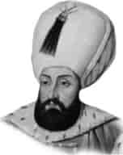

III. MEHMET
Babası : III. Murat
Doğumu : 26 Mayıs 1566
Vefatı : 21 Aralık 1603
Saltanatı : 1595 - 1603 (8 yıl)
III. Mehmet, Manisa’da doğdu. Çok kuvvetli bir ilim tahsili yaptı. Orta boylu, kumral saçlı ve güzel yüzlü idi. Dinine çok bağlıydı ve tasavvufa da çok merakı vardı. Hz. Peygamberimiz’in mübarek ismi anılınca, saygı için derhal ayağa kalkardı.
İsmini Fatih’e benzemesi için dedesi Kanuni, “Mehmet” koymuştur. III. Mehmet devri, Osmanlı İmparatorluğu’nun duraklama devrine rastlar. Nitekim Avrupa topraklarında, Devlet-i Aliye, birçok kalelerini Avrupalılara teslim eder. Sadrazam Koca Sinan Paşa’nın başarısızlığını gören III. Mehmet, bizzat sefere çıkmış, Haçova Meydan Savaşı’nı Avrupalılara karşı kazanmış ve Eğri Kalesi’ni fethetmiştir. Tarihte “Eğri Fatihi” diye anılır. Bu devirde Osmanlı İran ile yeniden savaşa başlamıştır. Vezirlerin ve ulema sınıfından bazı kimselerin adam kayırmaları, ehliyetsiz oldukları halde birçok kimseleri ehliyetli ve üstün kabiliyetli olarak padişaha tavsiyede bulunmak için, padişahı ve Devlet-i Aliye’yi güç durumlarda bırakmıştır. III. Mehmet, zamanında çıkan iç isyanlarla (Celâli İsyanları) uğraşmış, dışarıda ise topraklar kaybedilmiştir. Meşhur Kanije Kalesi Müdafaası, Tiryaki Hasan Paşa tarafından bu devirde yapılmıştır. III. Mehmet genç yaşında iken 1603 yılında vefat etmiştir. III. Mehmet de şairdi ve “Adli” mahlasıyla şiirler yazmıştır. Şiirlerinden birisi de şöyledir:
Yokdurur zulme rızamız, adle biz mailleriz.
Gözleriz Hakkın rızasını emrine kaailleriz.
Arifiz, âyine-i âlem - nümadır gönlümüz.
Rüzgârın cünbüşünden sanmayın gaafilleriz.
Püse-i aşk içre Adli kaal ezelden kalbimiz,
Gıll-ü gışdan hâliyiz, âlemde sâfi dilleriz.
Erkek çocukları: I. Ahmet, I. Mustafa, Selim, Mahmut. Kızlarının isimleri bilinmiyor.